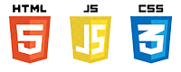
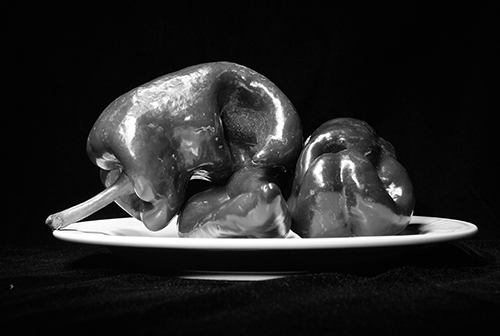
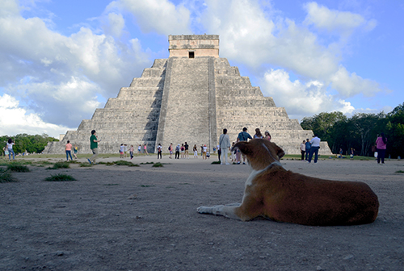
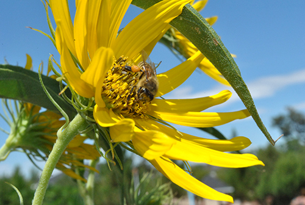
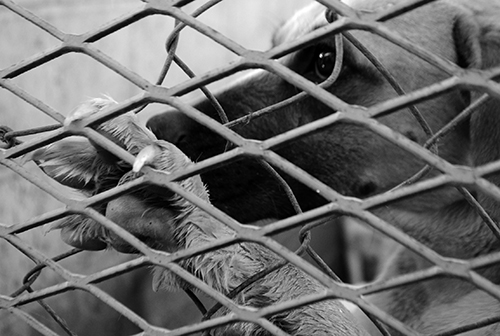
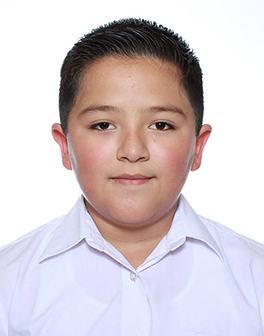
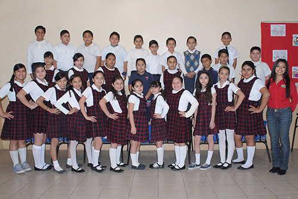
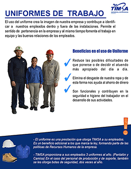
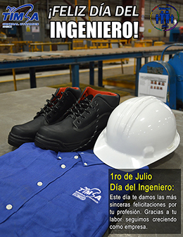

Sobre mí

Mi nombre es Ivan Huerta, nací un 10 de noviembre de 1989 en Mexicali, Baja California, México. Soy Lic. en ciencias de la comunicación con maestría en gestion de tecnologías de la información y comunicación.
Tengo experiencia en desarollo web Front-End, edición multimedia, fotografía, redacción de artículos científicos y docencia en materias de investigación a nivel universitario.
Mi intención es unirme a equipos de trabajo que tengan como objetivo el desarrollo e implementación de las TIC para el avance y el manejo de las ciencias de la Comunicación en un campo laboral, personal, social y científico.
Puedes ponerte en contacto conmigo a traves de distintos medios haciendo click en la seccion "Contacto" de este sitio web.
ContactoExperiencia Laboral
Museo Sol del Niño (2007 - 2008)
Compuland (2008 - 2010)


Nube Roja (2010 - 2014)

Technicolor (2014 - 2015)

TIMSA (2015 - 2016)

Gameloft (2016 - 2018)

Universidad Autónoma de Durango (2018 - 2020)
Mis trabajos

Educación
CBTIS 21
Tecnico en mantenimiento industrial (2004- 2007)
Se realizaban servicios de mantenimiento a maquinas industriales, torneado y modelado de piezas y
soldadura, nivelacion de acoplamientos y servicio de mantenimiento de aire acondicionado.
UABC
Licenciatura en Ciencias de la Comunicación (2008- 2015) Desarrollando habilidades en manejo de grupos, comunicación digital e investigación cualitativa y cuantitativa.
UABC
Maestria en Gestión de Tecnologías de la información y ComunicaciónFortaleciendo habilidades en el área de las TIC y programación, presentando ponencias en varios coloquios, desarrollando un framework para la narración de datos con fines científicos a través del storytelling.
OTROS CURSOS
RevisarPor que Trabajar conmigo
- Idiomas
- Espanol: Nativo
- Ingles: Avanzado
- Italiano: Intermedio
- Habilidades sociales
- - Empatia
- - Liderazgo
- - Autodidacta
- - Trabajo en Equipo
- - Facilidad de palabra
- Investigacion
- He llevado a cabo investigaciones cuantitativas y cualitativas sobre temas sociales y tecnologicos las cuales han sido presentadas en distintos coloquios. Dichos trabajos se encuentran publicados y pueden revisarlos haciendo click aqui
- Software

- Redacción
- Poseo fluidez al redactar y una buena ortografía, a lo largo de la carrera profesional me he enfocado en la redacción de textos académicos e informativos y mi principal intención es expresar las ideas de manera amigable para que pueda ser comprendida por el mayor público posible.
- Programación
- Experiencia en Front-End, trato de de que tu web cargue entre 2 y 4 segundos para mejorar la experiencia de usuario.
- 
Portafolio Gráfico











Publicaciones
Perspectivas de la migración en los diarios Bajacalifornianos.
Expositor en la 5ta Conferencia Binacional de Migración sobre las perspectivas de la prensa en Baja California. Este estudio consiste en un análisis de contenido de los principales diarios de la región noroeste de México sobre el tema de migración. (Pag. 15)
Leer masLa sobrepoblación canina y sus causas: factores de riesgo y soluciones
Expone la problematica que existe en Mexicali sobre el tema de la sobrepoblación canina. El articulo fue publicado en la revista UABC no. 93 con el fin de promover el cuidado animal y la tenencia responsable de mascotas en la ciudad de Mexicali, B.C, Mexico
Leer mas